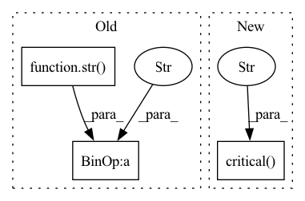

Pattern ID :277

Before Change
self._logger.error("[" + sys._getframe().f_code.co_name + "] - Key does exist in bucket)")
else:
self._logger.critical(
"[" + sys._getframe().f_code.co_name + "] - Caught Exception while trying to download key " + str(
key_to_download) + " from S3 " + str(ex))
return False
return True
After Change
if ex.response["Error"]["Code"] == "404":
self._logger.error("[" + sys._getframe().f_code.co_name + "] - Key does exist in bucket)")
else:
self._logger.critical(f"[{sys._getframe().f_code.co_name}] - Caught Exception while trying to download key {key_to_download} from S3 {ex}")
return False
return True
In pattern: SUPERPATTERN
Frequency: 3
Non-data size: 3
Instances
Fragment ID: 2099408
Project Name: deci-ai/super-gradients
Commit Name: 689df58894ca42ba8defe0286e329492477deca8
Time: 2023-01-22
Author: 35190946+Louis-Dupont@users.noreply.github.com
File Name: src/super_gradients/common/data_connection/s3_connector.py
M Class Name: S3Connector
N Class Name: S3Connector
M Method Name: download_key(3)
N Method Name: download_key(3)
M Parent Class: ILogger
N Parent Class: ILogger
M File Name: src/super_gradients/common/data_connection/s3_connector.py
N File Name: src/super_gradients/common/data_connection/s3_connector.py
M Start Line: 211
M End Line: 213
N Start Line: 196
N End Line: 196
'>
Before Change
except Exception as ex:
self._logger.critical(
"[" + sys._getframe().f_code.co_name + "] - Caught Exception while trying to upload file " + str(
filename_to_upload) + "to S3" + str(ex))
return False
@explicit_params_validation(validation_type="NoneOrEmpty")
After Change
return True
except Exception as ex:
self._logger.critical(f"[{sys._getframe().f_code.co_name}] - Caught Exception while trying to upload file {filename_to_upload} to S3 {ex}")
return False
@explicit_params_validation(validation_type="NoneOrEmpty")
def download_key(self, target_path: str, key_to_download: str) -> bool:
'>
Fragment ID: 2099409
Project Name: deci-ai/super-gradients
Commit Name: 689df58894ca42ba8defe0286e329492477deca8
Time: 2023-01-22
Author: 35190946+Louis-Dupont@users.noreply.github.com
File Name: src/super_gradients/common/data_connection/s3_connector.py
M Class Name: S3Connector
N Class Name: S3Connector
M Method Name: upload_file(3)
N Method Name: upload_file(3)
M Parent Class: ILogger
N Parent Class: ILogger
M File Name: src/super_gradients/common/data_connection/s3_connector.py
N File Name: src/super_gradients/common/data_connection/s3_connector.py
M Start Line: 190
M End Line: 192
N Start Line: 177
N End Line: 177
'>
Before Change
def print_insert_error(obj, obj_name):
warnings.warn("Issue inserting data %s of type %s" %
(obj_name, str(type(obj))))
def print_insert_type_error(obj, obj_name):
After Change
def print_insert_error(obj, obj_name):
log.critical("Issue inserting data {0} of type {type}",
obj_name, type=str(type(obj)))
def print_insert_type_error(obj, obj_name):
log.critical("Issue inserting type of data {0}} ({type}})" %
'>
Fragment ID: 2099407
Project Name: nlesc-jcer/qmctorch
Commit Name: adaaa1ed349fb72bbacad1c74788252742eddbf5
Time: 2020-05-25
Author: nicolas.gm.renaud@gmail.com
File Name: qmctorch/utils/hdf5_utils.py
M Class Name: AnonimousClass
N Class Name: AnonimousClass
M Method Name: print_insert_error(2)
N Method Name: print_insert_error(2)
M Parent Class:
N Parent Class:
M File Name: qmctorch/utils/hdf5_utils.py
N File Name: qmctorch/utils/hdf5_utils.py
M Start Line: 9
M End Line: 10
N Start Line: 11
N End Line: 12